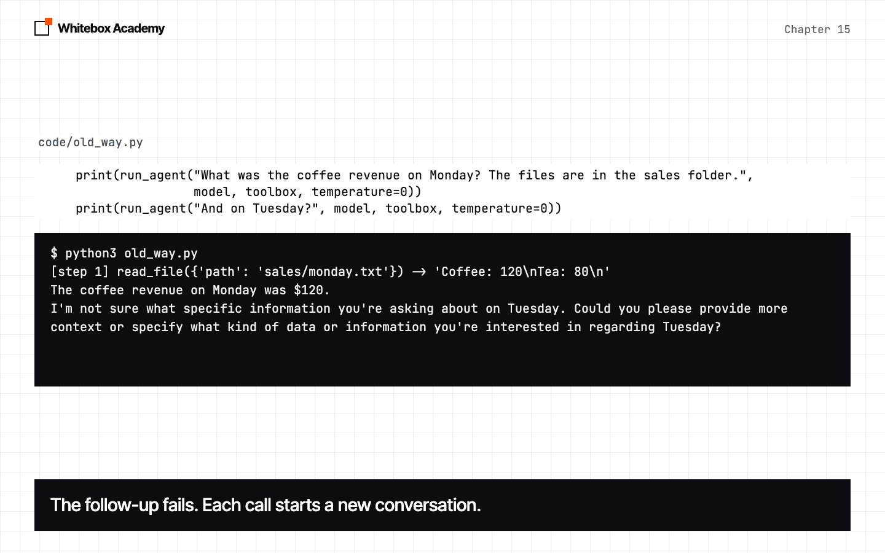
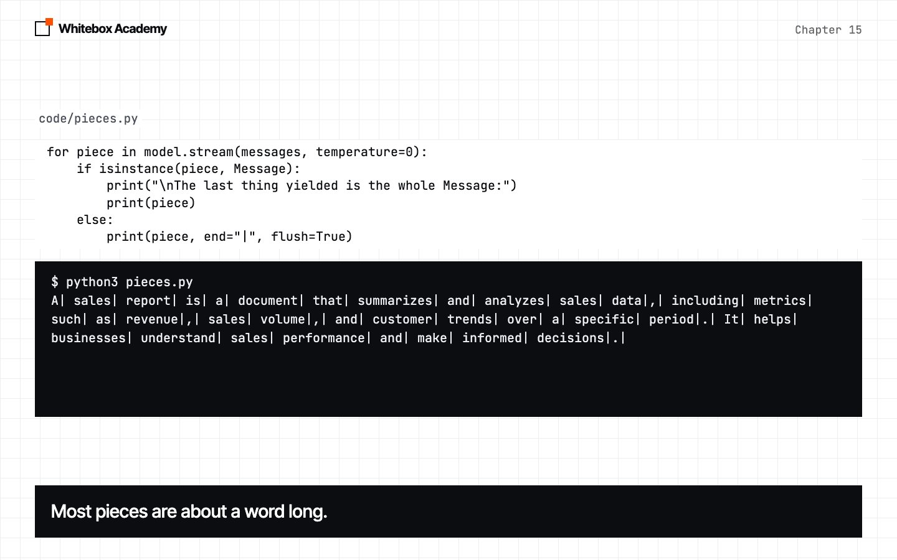
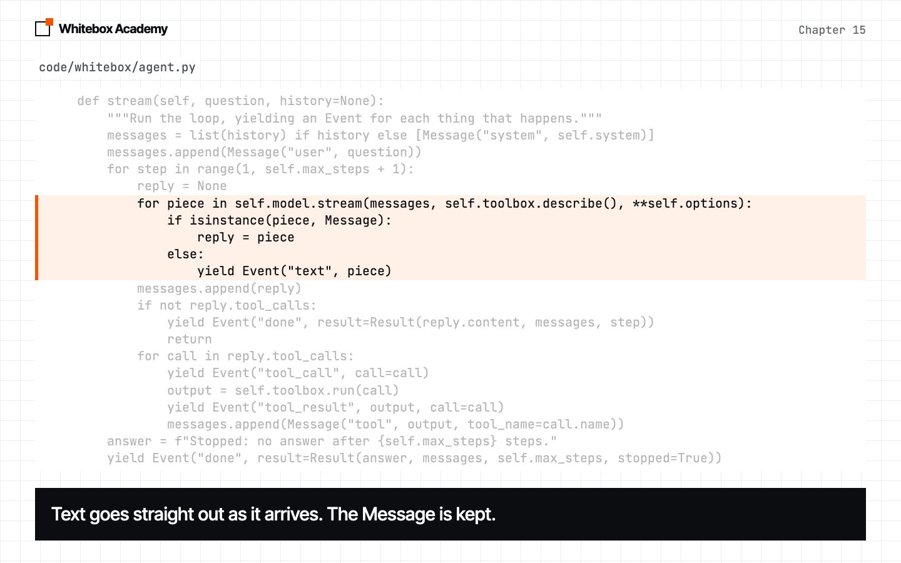
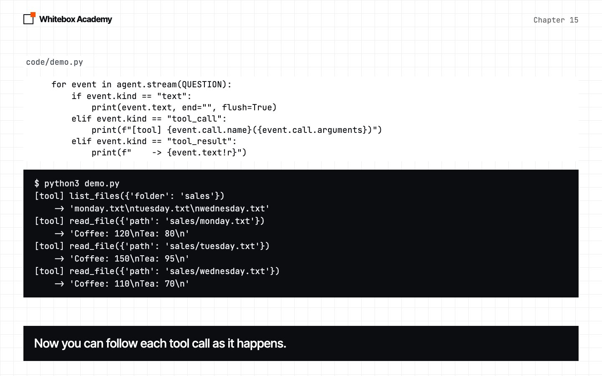

Runtime
Turn run_agent into an Agent you configure once, and can stream, run, and continue from one conversation to the next.
An agent other programs can use
In chapter 14, you stopped writing tools twice. But run_agent is still one function that prints as it goes. A runtime is the part of a framework that runs the agent, and reports what happened.
Start Ollama, and activate the .venv you made in chapter 05. Run the commands in this chapter from chapters/15-runtime/code. The first time, run python3 -m pip install -r requirements.txt.
Feel the problem
old_way.py is provided. It’s a copy of chapter 14’s run_agent, and it asks a question, then a follow-up:
print(run_agent("What was the coffee revenue on Monday? The files are in the sales folder.",
model, toolbox, temperature=0))
print(run_agent("And on Tuesday?", model, toolbox, temperature=0))
Predict: will the model know what “And on Tuesday?” means?
$ python3 old_way.py
[step 1] read_file({'path': 'sales/monday.txt'}) -> 'Coffee: 120\nTea: 80\n'
The coffee revenue on Monday was $120.
I'm not sure what specific information you're asking about on Tuesday. Could you please provide more context or specify what kind of data or information you're interested in regarding Tuesday?
No conversation
Each call builds a new list of messages, so the second question arrives alone.
Silence
Nothing appears until the model has finished the whole reply.
It decides what you see
The [step 1] line is a print inside the function. A website using this agent couldn’t show that step, or hide it.
Stream a reply
In chapter 04, you wrote a generator that gave back one word at a time. Now every Model gets a stream method. This default, on the base class, works for any model, even FakeModel. The last thing it yields is always the finished Message, because that holds any tool calls.
def stream(self, messages, tools=None, **options):
"""Yield the reply's text in pieces, then the finished Message."""
reply = self.chat(messages, tools, **options)
if reply.content:
yield reply.content
yield reply
OllamaModel replaces it with a real stream. Ollama sends one line of JSON per piece, and iter_lines gives you each line as it arrives. Text is yielded at once. A tool call arrives whole, so it’s only saved.
def stream(self, messages, tools=None, **options):
body = self.request_body(messages, tools, options, stream=True)
response = requests.post(f"{self.url}/api/chat", json=body, timeout=180, stream=True)
response.raise_for_status()
text, calls = "", []
for line in response.iter_lines():
part = json.loads(line)["message"]
if part.get("content"):
text += part["content"]
yield part["content"]
calls += part.get("tool_calls") or []
yield self.from_ollama({"content": text, "tool_calls": calls})
pieces.py is provided, and shows this happening. isinstance(piece, Message) asks whether a value is a Message. In print, end="|" replaces the usual new line, and flush=True shows the text right away.
for piece in model.stream(messages, temperature=0):
if isinstance(piece, Message):
print("\nThe last thing yielded is the whole Message:")
print(piece)
else:
print(piece, end="|", flush=True)
$ python3 pieces.py
A| sales| report| is| a| document| that| summarizes| and| analyzes| sales| data|,| including| metrics| such| as| revenue|,| sales| volume|,| and| customer| trends| over| a| specific| period|.| It| helps| businesses| understand| sales| performance| and| make| informed| decisions|.|
The last thing yielded is the whole Message:
Message(role='assistant', content='A sales report is a document that summarizes and analyzes sales data, including metrics such as revenue, sales volume, and customer trends over a specific period. It helps businesses understand sales performance and make informed decisions.', tool_calls=[], tool_name=None)
Each | marks the end of a piece. On your screen, they appear one at a time.
From pieces to events
An agent also calls tools, so a run can’t just yield text. A new dataclass describes anything that can happen, and a new class holds the settings you used to pass on every call:
@dataclass
class Event:
"""Something that happened during a run. kind is text, tool_call, tool_result or done."""
kind: str
text: str = ""
call: ToolCall | None = None
result: Result | None = None
@dataclass
class Agent:
model: object
toolbox: Toolbox = field(default_factory=Toolbox)
system: str = SYSTEM
max_steps: int = 8
options: dict = field(default_factory=dict)
run_agent has become the method Agent.stream. It’s chapter 12’s loop, as a generator:
def stream(self, question, history=None):
"""Run the loop, yielding an Event for each thing that happens."""
messages = list(history) if history else [Message("system", self.system)]
messages.append(Message("user", question))
for step in range(1, self.max_steps + 1):
reply = None
for piece in self.model.stream(messages, self.toolbox.describe(), **self.options):
if isinstance(piece, Message):
reply = piece
else:
yield Event("text", piece)
messages.append(reply)
if not reply.tool_calls:
yield Event("done", result=Result(reply.content, messages, step))
return
for call in reply.tool_calls:
yield Event("tool_call", call=call)
output = self.toolbox.run(call)
yield Event("tool_result", output, call=call)
messages.append(Message("tool", output, tool_name=call.name))
answer = f"Stopped: no answer after {self.max_steps} steps."
yield Event("done", result=Result(answer, messages, self.max_steps, stopped=True))
- Every
printhas become ayield. The framework no longer decides what you see. - Text goes out as it arrives, and the finished
Messageis kept for the loop. returninside a generator simply ends it.- Every run finishes with one
doneevent, whichever way it ended.
Now the caller chooses what to show. This is demo.py:
agent = Agent(model, toolbox, options={"temperature": 0})
for event in agent.stream(QUESTION):
if event.kind == "text":
print(event.text, end="", flush=True)
elif event.kind == "tool_call":
print(f"[tool] {event.call.name}({event.call.arguments})")
elif event.kind == "tool_result":
print(f" -> {event.text!r}")
print()
$ python3 demo.py
[tool] list_files({'folder': 'sales'})
-> 'monday.txt\ntuesday.txt\nwednesday.txt'
[tool] read_file({'path': 'sales/monday.txt'})
-> 'Coffee: 120\nTea: 80\n'
[tool] read_file({'path': 'sales/tuesday.txt'})
-> 'Coffee: 150\nTea: 95\n'
[tool] read_file({'path': 'sales/wednesday.txt'})
-> 'Coffee: 110\nTea: 70\n'
Now, let's extract the coffee revenue from each file and add them up.
Monday's coffee revenue: 120
Tuesday's coffee revenue: 150
Wednesday's coffee revenue: 110
Let's add these numbers to find the total coffee revenue.
[tool] add_numbers({'numbers': [120, 150, 110]})
-> '380'
The total coffee revenue across all the days in the sales folder is 380.
Look at the middle of that output. Before add_numbers, the model wrote text, and that text isn’t the answer. It did this in every run we tried: 5 of 5 at temperature 0, and 5 of 5 at the default temperature. All 10 runs reached 380. So if you want only the answer, read it from the done event, not from the text.
-
Feel the limits
The follow-up fails, because each call starts a new conversation.

-
Watch the pieces
Each bar marks the end of one piece of the reply.

-
Yield events
The loop yields text as it arrives, and keeps the finished message.

-
Follow the run
The caller loops over the events, and shows each tool call as it happens.

Run to the end
Often you just want the answer, and some facts about the run. Agent.run reads the stream for you. There’s only one loop in the framework, so run and stream can’t disagree.
@dataclass
class Result:
answer: str
messages: list[Message]
steps: int
stopped: bool = False
def run(self, question, history=None):
"""Run the loop to the end and return the Result."""
for event in self.stream(question, history):
if event.kind == "done":
return event.result
result.py is provided:
result = agent.run("What was the coffee revenue on Monday? The files are in the sales folder.")
print("Answer: ", result.answer)
print("Steps: ", result.steps)
print("Stopped:", result.stopped)
print("Messages:", [message.role for message in result.messages])
$ python3 result.py
Answer: The coffee revenue on Monday was $120.
Steps: 2
Stopped: False
Messages: ['system', 'user', 'assistant', 'tool', 'assistant']
Two steps means two calls to the model: one asked for the file, and one answered.
Continue a conversation
result.messages is the whole conversation, and that’s all a follow-up needs. Pass it back as history. list(history) makes a copy, so a new run can’t change an old Result. The Agent keeps nothing between runs, so one agent can serve many conversations.
memory.py is provided:
first = agent.run("What was the coffee revenue on Monday? The files are in the sales folder.")
print("First: ", first.answer)
print("Without:", agent.run("And on Tuesday?").answer)
print("With: ", agent.run("And on Tuesday?", first.messages).answer)
Predict: which of the two follow-ups will give 150?
$ python3 memory.py
First: The coffee revenue on Monday was $120.
Without: I'm not sure what specific information you're asking about on Tuesday. Could you please provide more context or specify what kind of data or information you're interested in regarding Tuesday?
With: The coffee revenue on Tuesday was $150.
We ran this 5 times at temperature 0, and 5 times at the default temperature. With history, the follow-up gave 150 in all 10 runs. Without it, it gave 150 in none of them.
Put that in a loop, and you have a chat program. In chat.py, input waits for you to type a line, as in chapter 09:
history = None
question = input("You: ")
while question != "quit":
result = agent.run(question, history)
history = result.messages
print("Agent:", result.answer)
question = input("You: ")
$ python3 chat.py
You: What was the coffee revenue on Monday? The files are in the sales folder.
Agent: The coffee revenue on Monday was $120.
You: And on Tuesday?
Agent: The coffee revenue on Tuesday was $150.
You: Add those two numbers together.
Agent: The total revenue from coffee on both Monday and Tuesday was $270.
You: quit
That’s a real session. Your replies may differ.
A generator waits for you
lazy.py is provided. It uses a fake model, so you can count the calls.
events = Agent(model, toolbox).stream("How many files are there?")
print("Model calls after stream():", len(model.seen))
print("First event:", next(events).kind)
print("Model calls after one event:", len(model.seen))
print("The rest:", [event.kind for event in events])
print("Model calls at the end:", len(model.seen))
Predict: how many model calls will there be right after stream()?
$ python3 lazy.py
Model calls after stream(): 0
First event: tool_call
Model calls after one event: 1
The rest: ['tool_result', 'text', 'done']
Model calls at the end: 2
Calling a generator function runs none of its code. Each time you ask for an event, it runs up to the next yield, then pauses. So reading is what moves the agent forward. If you stop reading, the agent stops too, and any tools it hasn’t reached won’t run.
Agent replaced run_agent, so the tests changed too. From code/, run python3 -m pytest tests. You should see 17 passed.
These are real errors
| What you did | What you see | Fix |
|---|---|---|
Called agent.stream(question) and didn’t read it | Nothing happens, and the model isn’t called | Loop over it, or call agent.run |
Printed every text event as the answer | Notes from the model mixed into the answer | Read the answer from the done event |
Passed result.answer as history | AttributeError: 'str' object has no attribute 'role' | Pass result.messages |
| Ollama isn’t running | requests.exceptions.ConnectionError | Start Ollama |
Exercises
Open exercises.py and complete the five TODOs:
WordModel.stream: write a newModelthat streams word by word.tool_names: read the tools from a stream of events.run_live: show text as it arrives, and return theResult.Conversation.ask: write a class that remembers, so callers don’t have to.Conversation.transcript: turn the history into readable lines.
Then run python3 -m pytest test_exercises.py from chapters/15-runtime, not from code/. These checks use a fake model, so Ollama doesn’t need to be running. You’ve finished when you see 5 passed.
Common mistakes
- Treating all the text as the answer. The model can write notes between tool calls.
- Forgetting that a generator is lazy. Nothing runs until something reads it.
- Keeping the conversation in the
Agent. Then two people sharing an agent would share a conversation. Keep it with the caller. - Changing
systemon a continued conversation. The system message is already inhistory, so a new one is ignored.
What you opened
- A runtime runs the agent and reports what happened, and leaves the showing to the caller.
Model.streamyields text as it arrives, then the finishedMessage.Agent.streamyields anEventfor each thing that happens.Agent.runreads the stream, and returns aResult.- Passing
result.messagesashistorycontinues a conversation. - A generator only runs while something reads it.